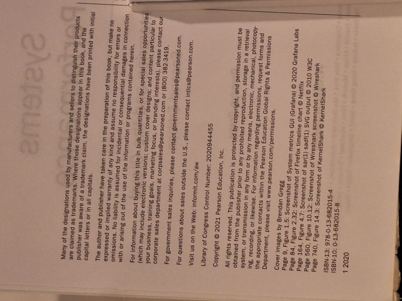

Systems Performance: Enterprise and the Cloud
Brendan Gregg · Addison-Wesley / Pearson Education, 2020

C$68 · Fine condition
Brendan Gregg, Systems Performance: Enterprise and the Cloud (Addison-Wesley, 2020). Second edition, first printing, in Fine condition - clean, tight, and unmarked, with sharp corners. The comprehensive guide to performance analysis and tuning of modern operating systems and cloud environments: observability tools, CPUs, memory, file systems, disks, and networking, with the USE method and flame-graph methodologies for which the author is well known. Includes index.
Details
- Publisher: Addison-Wesley / Pearson Education, 2020
- Binding: Trade Paperback
- Edition: Second Edition (first printing, 2020)
- Condition: Fine
- ISBN: 978-0-13-682015-4
- Category: Software